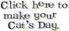

Pets.comBecause Pets Can't Drive. The sock puppet became a Super Bowl XXXIV star (Jan 30 2000, ~$1.2M ad) and a symbol of dot-com excess. IPO February 2000 — then the crash.
Timeline: Pets.com announced shutdown November 2000. Sock puppet Super Bowl fame, IPO, crash, liquidation — no live store here.
Shop · Cart · About the crash arc · Nov shutdown · Startup Failures catalog · AOL–Time Warner news · ← 2000 Start